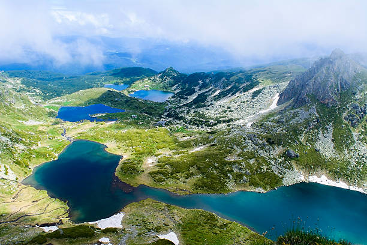

The Country Bulgaria
Hristo BaldzhiyskiBulgaria, nestled in southeastern Europe, boasts a rich tapestry of culture, history, and natural beauty. Despite its modest size, this captivating country offers a wealth of experiences for travelers seeking charm and authenticity. With a history spanning millennia, Bulgaria's ancient landmarks tell tales of civilizations past. From the remarkable Thracian tombs dotting the landscape to the awe-inspiring architecture of Orthodox monasteries hidden in the mountains, Bulgaria's historical sites offer a glimpse into its storied past.
The Rilla Mountain
Bulgaria, nestled in southeastern Europe, boasts a rich tapestry of culture, history, and natural beauty. Despite its modest size, this captivating country offers a wealth of experiences for travelers seeking charm and authenticity. With a history spanning millennia, Bulgaria's ancient landmarks tell tales of civilizations past. From the remarkable Thracian tombs dotting the landscape to the awe-inspiring architecture of Orthodox monasteries hidden in the mountains, Bulgaria's historical sites offer a glimpse into its storied past. Nature lovers will find solace in Bulgaria's diverse landscapes. The serene shores of the Black Sea beckon beachgoers with their golden sands and azure waters, while the rugged peaks of the Balkan Mountains provide a playground for hikers and outdoor enthusiasts. The tranquil beauty of the countryside, with its rolling hills and picturesque villages, offers a peaceful retreat from the hustle and bustle of city life. In the heart of Bulgaria's cities, modernity blends seamlessly with tradition. Bustling markets overflow with colorful produce and handmade crafts, while lively cafes and restaurants serve up delicious cuisine influenced by centuries of cultural exchange. Bulgaria's warm and welcoming people add to its allure. Known for their hospitality and kindness, Bulgarians take pride in sharing their traditions and heritage with visitors, ensuring that every traveler feels at home in this enchanting corner of Europe.